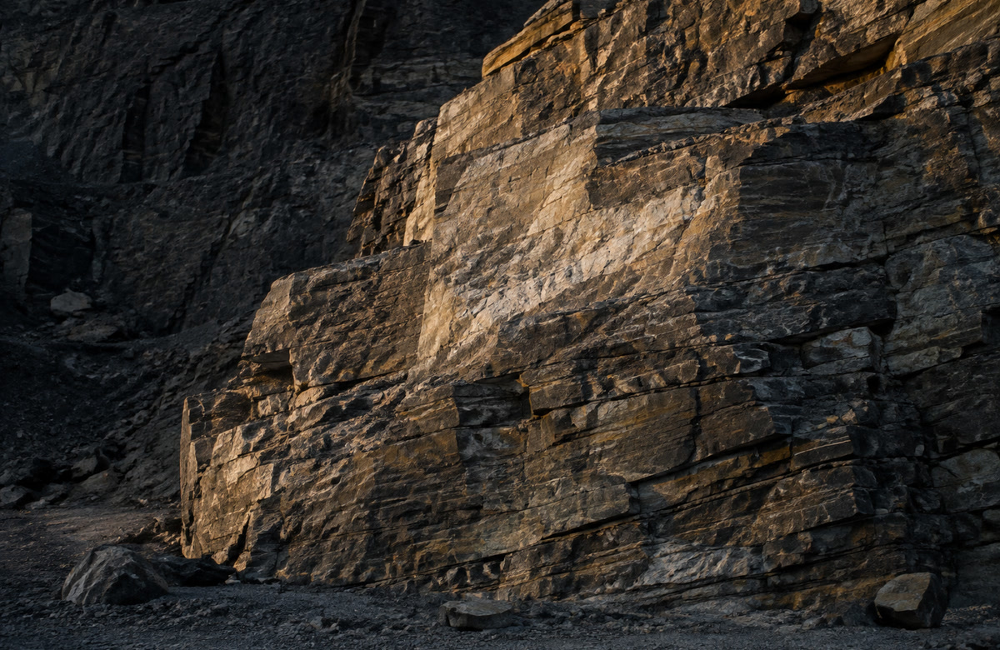
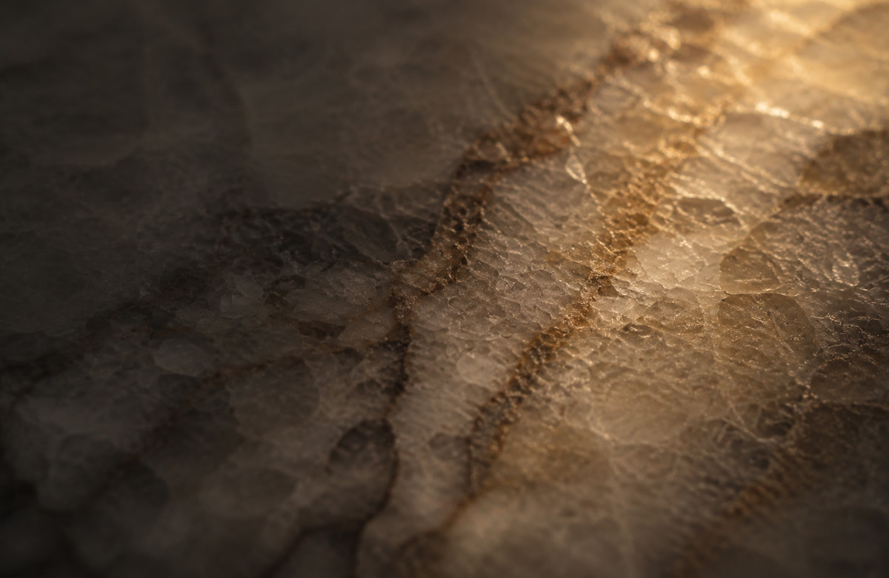

Quartzite starts as ordinary quartz sandstone — until heat and pressure fuse the sand grains into a rock harder than almost anything else you'd put in a home.
Quartzite begins life as sandstone — compacted grains of quartz sand, the same mineral that makes up most beach sand. Left alone, sandstone stays sandstone: soft, porous, and easy to crumble. But subject it to the same kind of metamorphism that turns limestone into marble — heat and pressure deep in the earth's crust — and the individual sand grains fuse together into one continuous, interlocking mass of quartz crystal.
Because quartz is one of the hardest common minerals on earth, the resulting rock inherits that hardness almost entirely. Quartzite typically ranks around 7 on the Mohs hardness scale — noticeably harder than marble or granite, and close to the hardness of the steel in a knife blade.


Quartzite has become a popular alternative to marble precisely because some varieties show the same soft, flowing veining — but with real quartz-grade durability behind it. That popularity has a downside: the stone trade isn't always precise about the name. Stones like "Fantasy Brown," widely sold as quartzite, are technically dolomitic marble — a real stone, just a softer and more acid-sensitive one than true quartzite.
It's a genuine point of confusion across the whole industry, not just here. If the durability of true quartzite is the reason you're choosing it, it's worth having it confirmed rather than assumed — we're straight with you about which one you're actually looking at.
True quartzite gives you the movement and softness of marble's veining with meaningfully better scratch and heat resistance — it sits closer to granite on the durability scale while looking closer to marble on the surface. That combination is exactly why it's become a favourite for kitchens that want the marble look without quite as much of marble's vulnerability.
It's still a natural, porous stone underneath the hardness, though — which means it needs the same basic respect marble does, just with a wider margin for error.
Quartzite resists scratching and heat far better than marble, but it's still a natural, porous stone — so the same two things that damage marble can affect it too, just more slowly and less severely.
True quartzite is far more acid-resistant than marble — a splash of lemon or wine is unlikely to etch it the way it would marble — but it isn't fully immune, and prolonged contact with something acidic can still dull the surface.
Oil and pigment can still soak into the stone's natural pores, though a properly sealed quartzite resists this well. This is the main reason regular resealing still matters, even on a "tough" stone.
Less urgent than with marble, but oil and wine left for hours can still leave a mark on unsealed or under-sealed stone.
Harsh acidic or ammonia-based cleaners still aren't a good idea, even if quartzite tolerates the occasional splash better than marble does.
Quartzite handles heat far better than marble, but a trivet under a hot pan costs nothing and removes the risk entirely.
Quartzite's lower porosity generally means a longer gap between resealing than marble needs — we'll confirm the right interval for your specific slab.
A common and reasonable question — the name gets used loosely in the trade. Send us a photo of the slab or a sample and we'll tell you honestly what you're looking at.
A poultice treatment (similar to marble's) usually lifts oil-based staining, though it may take a little longer given quartzite's denser structure.
Often a sign the sealer has worn thin in high-use areas, rather than damage to the stone itself. A resealing service usually restores the finish.
Less common given the hardness, but a sharp edge impact can still chip it. Repairable and colour-matched, the same as any other natural stone.
Been quoted "quartzite" somewhere else and want a second opinion? Send us a photo and we'll tell you straight what it actually is.